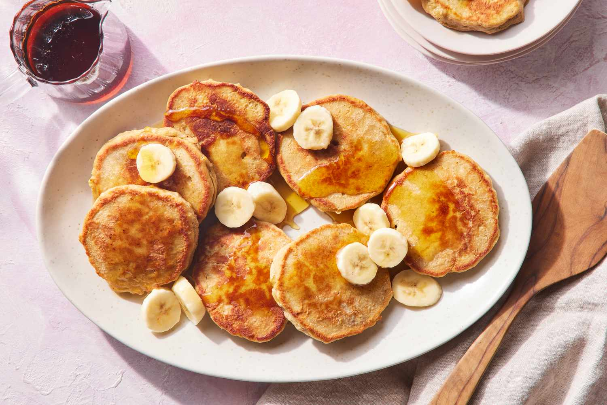

Home
Oat and banana pancakes

Description
Discover the perfect combination of flavor and wellness with these homemade banana oatmeal pancakes. They are the
ideal choice for anyone looking for a quick, healthy breakfast or snack packed with fiber and protein.
Forget the hassle and enjoy a classic dish reimagined to fuel your body. Preparing them is as simple as blending
the ingredients and cooking them in a pan until golden brown for just a couple of minutes.
Ingredients
- 1 cup of rolled oats
- 1/4 cup of milk
- 2 eggs
- 1 banana
- 1 tsp of Vanilla Extract
- 20 ml of vegetable oil
- Sweetener (to taste)
Steps
- Place all your ingredients into a blender, keeping the eggs and oil aside for now. Blend the mixture for
about 1 to 2 minutes until everything is well combined.
- Add the eggs and oil into the blender. Pulse for just a few seconds until the batter becomes completely
smooth.
- Get a large skillet hot over the stove and grease it with a small amount of vegetable oil.
- Pour a medium scoop of batter into the pan for each pancake. Let it cook until you see bubbles forming on
top, then flip and cook the other side until golden brown.
- Remove the cooked pancakes from the heat and cover them to stay soft while you finish the rest. You can also
place them in a warm oven to keep them hot.
- Top with fresh berries and your choice of maple syrup or honey before serving.